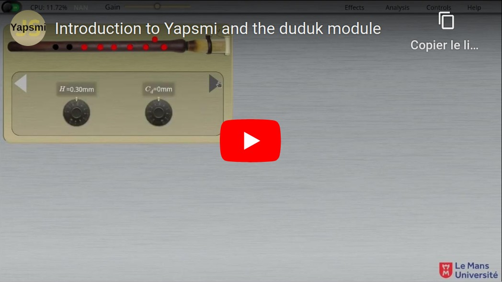

This program is developped for research and pedagogical purposes at Le Mans University
inside the acoustic laboratory

It uses a duduk model, whose details can be found in a preprint soon to be found on HAL.
For a tour of the possibilities offered by this program, please consult the following link to a youtube video (link redirects to an external website)
